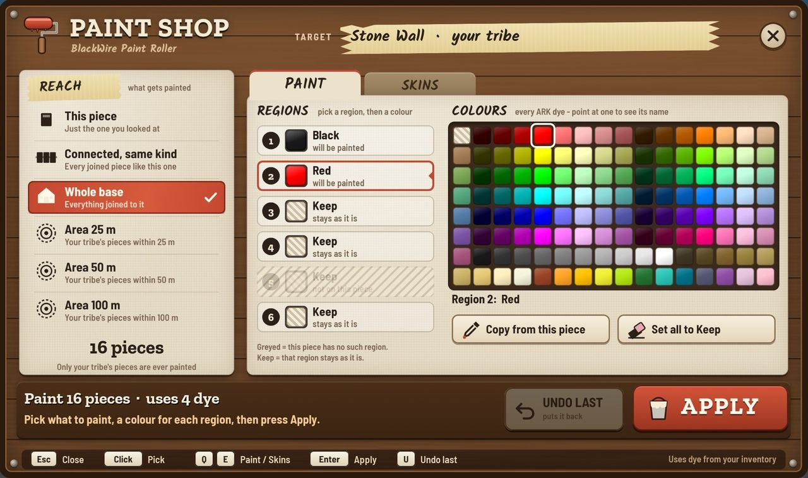
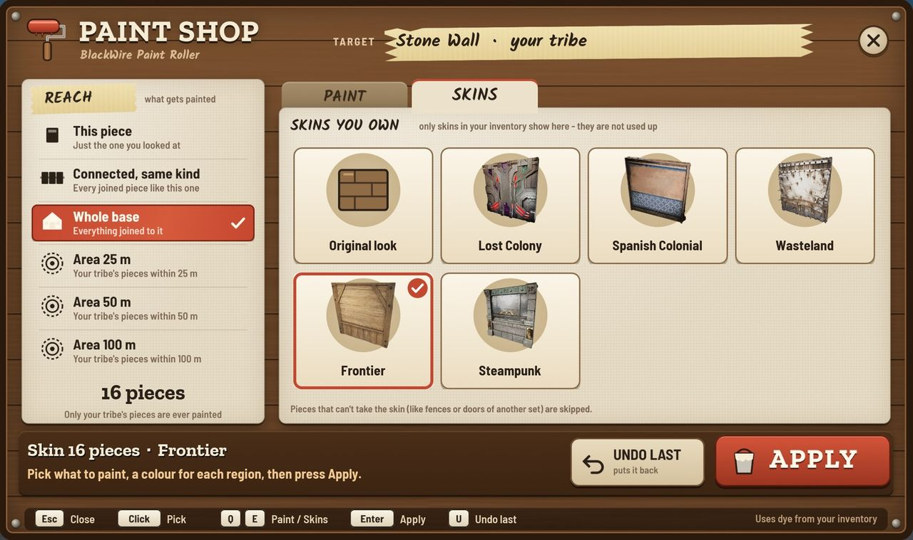
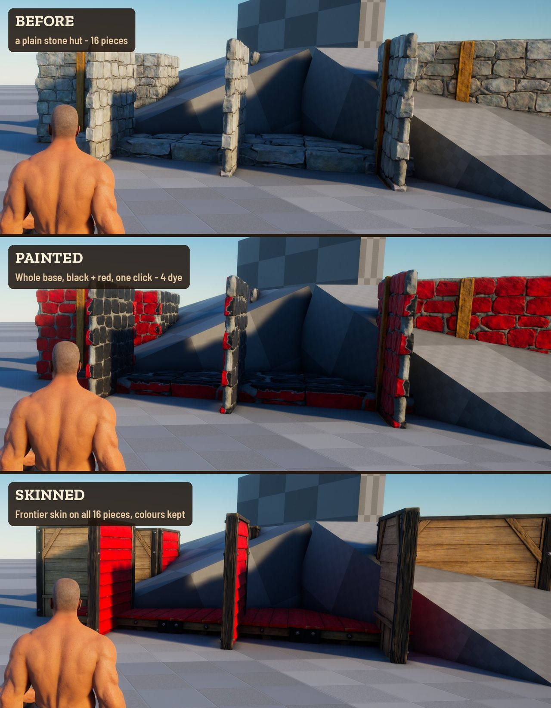
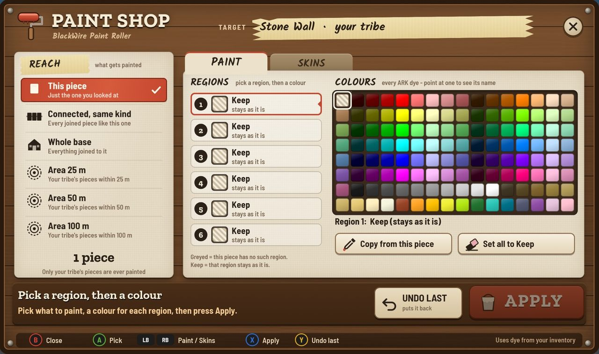

All mods
mods / building_bases
BlackWire Paint Roller.
Paint or skin your whole base at once with any dye, then undo with one press.
Works onPC · Xbox · PlayStation
ServersSingle player · Dedicated
CategoryBuilding & Bases
SetupOptional INI
01 · what_it_does
What it does.
- Look at a piece of your base and use the roller.
- Paint this piece, every joined piece of the same kind, the whole base, or your tribe's pieces within 25 / 50 / 100 m.
- Pick any ARK dye for each region, or copy the colours from the piece.
- Apply structure skins you own, or put the original look back.
- Undo Last puts the old look back.
- Uses dye: 1 of each colour per 10 pieces. Only your own tribe's pieces.
02 · full_guide
How it works.
Numbers are the defaults. Server owners can change them in the settings below.
What one use can paint
Look at a piece of your base and use the roller (craft it at level 9 from wood, fiber and hide).
| Choice | Paints |
|---|
| This piece | Just the piece you are looking at |
| Connected, same kind | Every joined piece of the same kind |
| Whole base | Your whole base |
| Area | Your tribe's pieces within 25, 50 or 100 m |
Colours
Pick any ARK dye for each region, keep a region as it is, or copy the colours from the piece.
Skins
Apply structure skins you own, or put the original look back.
Undo Last
Puts the old look back.
Dye cost
1 dye of each chosen colour per 10 pieces. One job paints up to 2,000 pieces.
Your pieces only
It only works on your own tribe's pieces.
03 · how_to_use
How to use it.
Craft it at level 9 (wood, fiber, hide), put it on your hotbar, look at your base and use it - keyboard or controller.
04 · in_game
In game.

Paint shop
Skins
Before and after
Controller05 · server_settings
Server settings.
Every line is optional. Change what you want and copy the block into GameUserSettings.ini.
06 · spawn_codes
Spawn codes.
For admins, in the console.
[BW] Paint Rollercheat giveitem "Blueprint'/BlackWire_PaintRoller/PrimalItem_BWPR_Roller.PrimalItem_BWPR_Roller'" 1 0 0
Stuck or found a bug?
Ask in the Paint Roller channel on the BlackWire Mods Discord.
 BLACKWIRE
BLACKWIRE